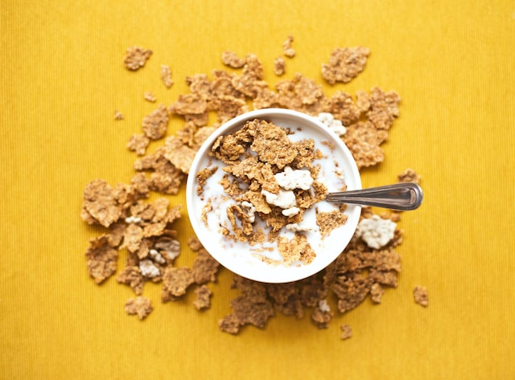

Understanding and Treating Lactic Acid Build-Up
The body converts glucose to lactic acid when it needs energy. When oxygen levels are low, which
usually happens during high-intensity exercise, lactic acid is produced. Exercise can be inhibited
by lactic acid build-up, so it's crucial to understand why this occurs and how to avoid it.
by Teri N. Buffington
Read more
Scientists have found a gene that enhances muscle strength during exercise
Researchers have discovered a gene that increases muscle strength when activated by exercise,
opening the door to the creation of therapeutic treatments which replicate some of the advantages of
working out.
by Anthony J. Cox
Read more

In Your Diet: Hidden Added Sugars
You may be eating more sugar than you know because of these items with added sugars.
Even if you avoid eating desserts like cookies, cake, and ice cream to reduce your intake of added
sugar, you probably ingest more sugar than you know.
by Lynnette J. Cordero
Read more